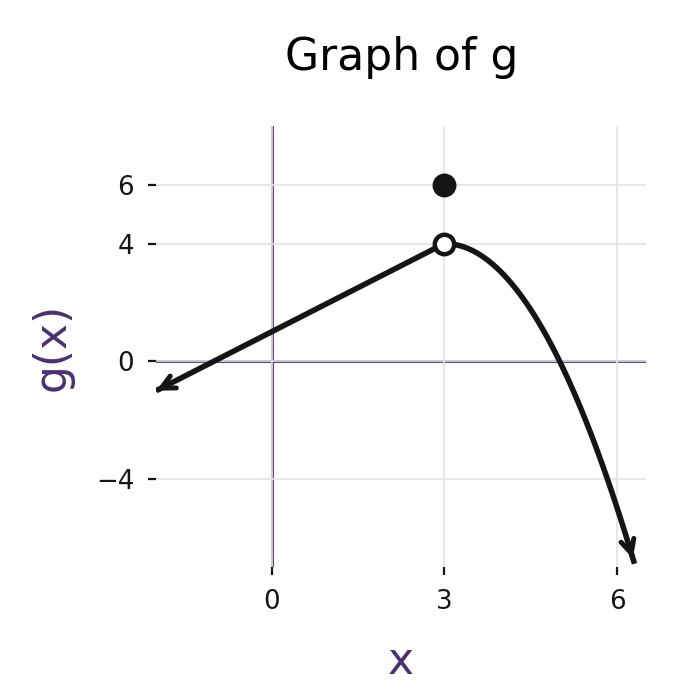
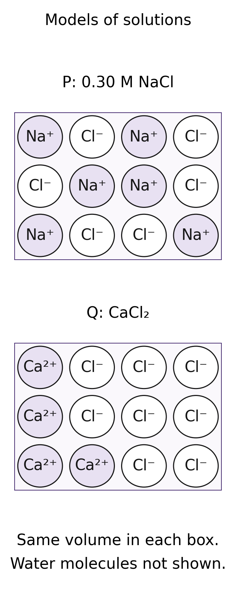

apcalcab-mcq-060

For x < 3 the graph follows y = x + 1. For x > 3 it follows y = −(x − 3)² + 4. The point (3, 4) is open and (3, 6) is filled. Arrows indicate continuation beyond the displayed window.
Question givens only. Not deployed.

For x < 3 the graph follows y = x + 1. For x > 3 it follows y = −(x − 3)² + 4. The point (3, 4) is open and (3, 6) is filled. Arrows indicate continuation beyond the displayed window.

Model P contains six Na⁺ ions and six Cl⁻ ions. Model Q contains four Ca²⁺ ions and eight Cl⁻ ions. The equal-size boxes represent the same small volume of solution. Each ion is separate; no water molecules, water orientations, or calculated concentrations are shown.